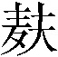

第五回 游幻境指迷十二钗 饮仙醪1曲演红楼梦2
正文
第四回中既将薛家母子在荣府内寄居等事略已表明，此回则暂不能写矣。
如今且说林黛玉自在荣府以来，贾母万般怜爱，寝食起居，一如宝玉，迎春、探春、惜春三个亲孙女倒且靠后；便是宝玉和黛玉二人之亲密友爱处，亦自较别个不同，日则同行同坐，夜则同息同止，真是言和意顺，略无参3商4。不想如今忽然来了一个薛宝钗，年岁虽大不多，然品格端方5，容貌丰美，人多谓黛玉所不及。而且宝钗行为豁达，随分从时6，不比黛玉孤高自许，目无下尘7，故比黛玉大得下人之心。便是那些小丫头子们，亦多喜与宝钗去顽。因此黛玉心中便有些悒郁不忿8之意，宝钗却浑然不觉。那宝玉亦在孩提之间，况自天性所禀9来的一片愚拙偏僻，视姊妹弟兄皆出一意，并无亲疏远近之别。其中因与黛玉同随贾母一处坐卧，故略比10别个姊妹熟惯些。既熟惯，则更觉亲密；既亲密，则不免一时有求全之毁，不虞11之隙12。这日不知为何，他二人言语有些不合起来，黛玉又气的独在房中垂泪，宝玉又自悔言语冒撞，前去俯就13，那黛玉方渐渐的回转来。
因东边宁府中花园内梅花盛开，贾珍之妻尤氏乃治酒14，请贾母、邢夫人、王夫人等赏花。是日先携了贾蓉之妻15，二人来面请16。贾母等于早饭后过来，就在会芳园17游顽，先茶后酒，不过皆是宁荣二府女眷家宴小集，并无别样新文趣事可记。
一时宝玉倦怠，欲睡中觉，贾母命人好生哄着，歇一回再来。贾蓉之妻秦氏便忙笑回道：”我们这里有给宝叔收拾下的屋子，老祖宗放心，只管交与我就是了。”又向宝玉的奶娘丫鬟等道：”嬷嬷、姐姐们，请宝叔随我这里来。”贾母素知秦氏是个极妥当的人，生的袅娜18纤巧，行事又温柔和平，乃重孙19媳中第一个得意之人，见他去安置宝玉，自是安稳的。
当下秦氏引了一簇人来至上房内间。宝玉抬头看见一幅画贴在上面，画的人物固好，其故事乃是《燃藜图》2021，也不看系何人所画，心中便有些不快。又有一副对联，写的是：
世事洞明皆学问，人情练达即文章。22
及看了这两句，纵然室宇23精美，铺陈华丽，亦断断不肯在这里了，忙说：”快出去，快出去！”秦氏听了笑道：”这里还不好，可往那里去呢？不然往我屋里去吧。”宝玉点头微笑。有一个嬷嬷说道：”那里有个叔叔往侄儿房里睡觉的理？”秦氏笑道：”嗳哟哟，不怕他恼，他能多大呢，就忌讳这些个！上月你没看见我那个兄弟来了，虽然与宝叔同年，两个人若站在一处，只怕那个还高些呢。”宝玉道：”我怎么没见过，你带他来我瞧瞧。”众人笑道：”隔着二三十里，往那里带去，见的日子有呢。”说着大家来至秦氏房中。刚至房门，便有一股细细的甜香袭人而来。宝玉觉得眼饧24骨软，连说”好香！”入房向壁上看时，有唐伯虎画的《海棠春睡图》25，两边有宋学士秦太虚写的一副对联26，其联云：
嫩寒锁梦因春冷，芳气笼人是酒香。27
案上设着武则天当日镜室中设的宝镜28，一边摆着飞燕立着舞过的金盘29，盘内盛着安禄山掷过伤了太真乳的木瓜30。上面设着寿阳公主31于含章殿下卧的榻32，悬的是同昌公主制的联珠帐3334。宝玉含笑连说：”这里好！”秦氏笑道：”我这屋子大约神仙也可以住得了。”说着亲自展开了西子浣过的纱衾3536，移了红娘抱过的鸳枕3738。于是众奶母服侍宝玉卧好，款款39散了，只留袭人、媚人、晴雯、麝月四个丫鬟为伴。秦氏便分咐小丫鬟们，好生在廊檐40下看着猫儿狗儿打架。
那宝玉刚合上眼，便惚惚41的睡去，犹似秦氏在前，遂悠悠荡荡，随了秦氏，至一所在。但见朱栏白石，绿树清溪，真是人迹希逢，飞尘不到。宝玉在梦中欢喜，想道：”这个去处有趣，我就在这里过一生，纵然失了家42也愿意，强如天天被父母师傅打呢。”正胡思之间，忽听山后有人作歌曰：
chūn mèng xián chóu 《春梦闲愁》 jǐng huàn xiān gū qīng cáo xuě qín ——警幻仙姑（清·曹雪芹） chūn mèng suí yún sàn ， fēi huā zhú shuǐ liú ； 春梦随云散，飞花逐水流； jì yán zhòng ér nǚ ， hé bì mì xián chóu 。 寄言众儿女，何必觅闲愁。
宝玉听了是女子的声音。歌音未息，早见那边走出一个人来，蹁跹43袅娜，端的与人不同。有赋4445为证：
jǐng huàn xiān gū fù 《警幻仙姑赋》 qīng cáo xuě qín ——清·曹雪芹 fāng lí liǔ wù ， zhà chū huā fáng 。 方离柳坞46，乍47出花房48。 dàn xíng chù ， niǎo jīng tíng shù ；jiāng dào shí ， yǐng dù huí láng 。 但49行处，鸟惊庭树50；将到时，影度51回廊52。 xiān mèi zhà piāo xī ， wén shè lán zhī fù yù ；hé yī yù dòng xī ， tīng huán pèi zhī kēng qiāng 。 仙袂53乍47飘兮，闻麝兰54之馥郁55；荷衣56欲动兮，听环佩57之铿锵58。 yè xiào chūn táo xī ， yún duī cuì jì ；chún zhàn yīng kē xī ， liú chǐ hán xiāng 。 靥笑春桃59兮，云堆翠髻60；唇绽樱颗6162兮，榴齿含香63。 xiān yāo zhī chǔ chǔ xī ， huí fēng wǔ xuě ；zhū cuì zhī huī huī xī ， mǎn é é huáng 。 纤腰之楚楚64兮，回风舞雪65；珠翠66之辉辉67兮，满额鹅黄68。 chū mò huā jiān xī ， yí chēn yí xǐ ；pái huái chí shàng xī ， ruò fēi ruò yáng 。 出没花间兮，宜69嗔宜喜；徘徊70池上兮，若飞若扬71。 é méi pín xiào xī ， jiāng yán ér wèi yǔ ；lián bù zhà yí xī ， dài zhǐ ér yù xíng 。 蛾眉72颦笑兮，将言而未语；莲步73乍移兮，待止而欲行。 xiàn bǐ zhī liáng zhì xī ， bīng qīng yù rùn ；mù bǐ zhī huá fú xī ， shǎn zhuó wén zhāng 。 羡彼之良质74兮，冰清玉润75；慕彼之华服76兮，闪灼文章77。 ài bǐ zhī mào róng xī ， xiāng péi yù zhuó ；měi bǐ zhī tài dù xī ， fèng zhù lóng xiáng 。 爱彼之貌容兮，香培玉琢78；美彼之态度79兮，凤翥龙翔80。 qí sù ruò hé ， chūn méi zhàn xuě 。qí jié ruò hé ， qiū jú bèi shuāng 。 其素若何，春梅绽雪81。其洁若何，秋菊被霜82。 qí jìng ruò hé ， sōng shēng kōng gǔ 。qí yàn ruò hé ， xiá yìng chéng táng 。 其静若何，松生空谷83。其艳若何，霞映澄塘84。 qí wén ruò hé ， lóng yóu qū zhǎo 。qí shén ruò hé ， yuè shè hán jiāng 。 其文若何，龙游曲沼85。其神若何，月射寒江86。 yīng cán xī zi ， shí kuì wáng qiáng 。 应惭西子，实愧王嫱87。 qí yǐ zāi ， shēng yú shú dì ， lái zì hé fāng ； 奇矣哉88，生于孰地89，来自何方； xìn yǐ hū ， yáo chí bù èr ， zǐ fǔ wú shuāng 。 信矣乎90，瑶池91不二，紫府92无双。 guǒ hé rén zāi ？rú sī zhī měi yě ！ 果93何人哉？如斯之美也！
方离柳坞94，乍出花房。但行处，鸟惊庭树95；将到时，影度回廊96。仙袂乍飘兮，闻麝兰97之馥郁；荷衣98欲动兮，听环佩之铿锵。靥笑春桃兮，云堆翠髻；唇绽樱颗兮99，榴齿100含香。纤腰之楚楚101兮，回风舞雪102；珠翠之辉辉兮，满额鹅黄103。出没花间兮，宜嗔宜喜104；徘徊池上兮，若飞若扬。蛾眉颦笑兮，将言而未语；莲步105乍移兮，待止而欲行。羡彼之良质兮，冰清玉润；慕彼之华服兮，闪灼文章106。爱彼之貌容兮，香培玉琢107；美彼之态度兮，凤翥龙翔108。其素若何，春梅绽雪。其洁若何，秋菊109被霜。其静若何，松生空谷。其艳若何，霞映澄塘。其文若何，龙游曲沼。其神若何，月射寒江。应惭西子，实愧王嫱110。奇矣哉，生于孰地，来自何方；信矣乎，瑶池不二，紫府111无双。果何人哉？如斯之美也！
宝玉见是一个仙姑，喜的忙来作揖问道：”神仙姐姐不知从那里来，如今要往那里去？也不知这是何处，望乞112携带携带。”那仙姑笑道：”吾居离恨天113之上，灌愁海114之中，乃放春山遣香洞115116太虚幻境117警幻仙姑118是也：司人间之风情月债，掌尘世之女怨男痴。因近来风流冤孽，缠绵于此处，是以前来访察机会，布散相思。今忽与尔相逢，亦非偶然。此离吾境不远，别无他物，仅有自采仙茗119一盏，亲酿美酒一瓮，素练120魔舞121122歌姬数人，新填《红楼梦》仙曲十二支，试随吾一游否？”宝玉听说，便忘了秦氏在何处，竟随了仙姑，至一所在，有石牌123横建，上书”太虚幻境”四个大字，两边一副对联，乃是：
假作真时真亦假，无为有处有还无124。
转过牌坊125，便是一座宫门，上面横书四个大字，道是：”孽海情天126“。又有一副对联，大书云：
痴男怨女，可怜风月债130难偿。
宝玉看了，心下自思道：”原来如此。但不知何为’古今之情’，何为’风月之债’？从今倒要领略领略。”宝玉只顾如此一想，不料早把些邪魔招入膏肓131132了。当下随了仙姑进入二层门内，至两边配殿133，皆有匾额对联，一时看不尽许多，惟见有几处写的是：”痴情司”“结怨司”“朝啼司”“夜怨司”“春感司”“秋悲司”。看了，因向仙姑道：”敢烦仙姑引我到那各司中游玩游玩，不知可使得？”仙姑道：”此各司中皆贮的是普天之下所有的女子过去未来的簿册，尔凡眼尘躯，未便先知的。”宝玉听了，那里肯依，复央之再四。仙姑无奈，说：”也罢，就在此司内略随喜随喜134罢了。”宝玉喜不自胜，抬头看这司的匾上，乃是”薄命司”三字，两边对联写的是：
春恨秋悲皆自惹，花容月貌为谁妍135。
宝玉看了，便知感叹。进入门来，只见有十数个大厨，皆用封条封着。看那封条上，皆是各省的地名。宝玉一心只拣自己的家乡封条看，遂无心看别省的了。只见那边厨上封条上大书七字云：”金陵十二钗正册”。宝玉问道：”何为’金陵十二钗正册’？”警幻道：”即贵省中十二冠首女子之册，故为’正册’。”宝玉道：”常听人说，金陵极大，怎么只十二个女子？如今单我家里，上上下下，就有几百女孩子呢。”警幻冷笑道：”贵省女子固多，不过择其紧要者录之。下边二厨则又次之。馀者庸常之辈，则无册可录矣。”宝玉听说，再看下首二厨上，果然写着”金陵十二钗副册”，又一个写着”金陵十二钗又副册”。宝玉便伸手先将”又副册”厨开了，拿出一本册来，揭开一看，只见这首页上画着一幅画，又非人物，也无山水，不过是水墨滃染136的满纸乌云浊雾而已。后有几行字迹，写的是：
qíng wén pàn cí 《晴雯判词》 qīng cáo xuě qín ——清·曹雪芹 jì yuè nán féng ， cǎi yún yì sàn 。 霁月137难逢，彩云138易散。 xīn bǐ tiān gāo ， shēn wèi xià jiàn 。 心比天高，身为下贱。 fēng liú líng qiǎo zhāo rén yuàn 。 风流灵巧招人怨。 shòu yāo duō yīn huǐ bàng shēng ， duō qíng gōng zi kōng qiān niàn 。 寿夭多因毁谤生，多情公子空牵念139。
宝玉看了，又见后面画着一簇鲜花，一床破席，也有几句言词，写道是：
xí rén pàn cí 《袭人判词》 qīng cáo xuě qín ——清·曹雪芹 wǎng zì wēn róu hé shùn ， kōng yún shì guì rú lán ； 枉自温柔和顺，空云140似桂如兰141； kān xiàn yōu líng yǒu fú ， shéi zhī gōng zi wú yuán 。 堪羡优伶142有福，谁知公子无缘143。
宝玉看了不解。遂掷下这个，又去开了副册厨门，拿起一本册来，揭开看时，只见画着一株桂花，下面有一池沼，其中水涸泥干，莲枯藕败，后面书云：
xiāng líng pàn cí 《香菱判词》 qīng cáo xuě qín ——清·曹雪芹 gēn bìng hé huā yī jīng xiāng ， píng shēng zāo jì shí kān shāng 。 根并荷花144一茎香，平生遭际145实堪伤146。 zì cóng liǎng dì shēng gū mù ， zhì shǐ xiāng hún fǎn gù xiāng 。 自从两地生孤木147，致使香魂返故乡148。
宝玉看了仍不解。便又掷了，再去取”正册”看，只见头一页上便画着两株枯木，木上悬着一围玉带；又有一堆雪，雪下一股金簪。也有四句言词，道是：
dài yù yǔ bǎo chāi pàn cí 《黛玉与宝钗判词》 qīng cáo xuě qín ——清·曹雪芹 kě tàn tíng jī dé ， kān lián yǒng xù cái 。 可叹停机德149，堪怜咏絮才150。 yù dài lín zhōng guà ， jīn zān xuě lǐ mái 。 玉带林151中挂，金簪雪152里埋153。
宝玉看了仍不解。待要问时，情知154他必不肯泄漏；待要丢下，又不舍。遂又往后看时，只见画着一张弓，弓上挂着香橼155。也有一首歌词云：
yuán chūn pàn cí 《元春判词》 qīng cáo xuě qín ——清·曹雪芹 èr shí nián lái biàn shì fēi ， liú huā kāi chù zhào gōng wéi 。 二十年来辨是非，榴花156开处照宫闱157。 sān chūn zhēng jí chū chūn jǐng ， hǔ sì xiāng féng dà mèng guī 。 三春争及初春景158，虎兕159160相逢大梦归161162。
后面又画着两人放风筝，一片大海，一只大船，船中有一女子掩面泣涕之状。也有四句写云：
tàn chūn pàn cí 《探春判词》 qīng cáo xuě qín ——清·曹雪芹 cái zì jīng míng zhì zì gāo ， shēng yú mò shì yùn piān xiāo 。 才自精明志自高，生于末世运偏消163。 qīng míng tì sòng jiāng biān wàng ， qiān lǐ dōng fēng yī mèng yáo 。 清明涕送江边望，千里东风一梦遥164。
后面又画几缕飞云，一湾逝水。其词曰：
shǐ xiāng yún pàn cí 《史湘云判词》 qīng cáo xuě qín ——清·曹雪芹 fù guì yòu hé wèi ， qiǎng bǎo zhī jiān fù mǔ wéi 。 富贵又何为165，襁褓166之间父母违167。 zhǎn yǎn diào xié huī ， xiāng jiāng shuǐ shì chǔ yún fēi 。 展眼吊斜晖168，湘江水逝楚云飞169170。
后面又画着一块美玉，落在泥垢之中。其断语云：
miào yù pàn cí 《妙玉判词》 qīng cáo xuě qín ——清·曹雪芹 yù jié hé zēng jié ， yún kōng wèi bì kōng 。 欲洁何曾洁，云空未必空。 kě lián jīn yù zhì ， zhōng xiàn nào ní zhōng 。 可怜金玉质，终陷淖泥中171。
后面忽见画着个恶狼，追扑一美女，欲啖之意。其书云：
yíng chūn pàn cí 《迎春判词》 qīng cáo xuě qín ——清·曹雪芹 zi xì zhōng shān láng ， dé zhì biàn chāng kuáng 。 子系中山狼，得志便猖狂。 jīn guī huā liǔ zhì ， yì zǎi fù huáng liáng 。 金闺花柳质172，一载赴黄粱173。
后面便是一所古庙，里面有一美人在内看经独坐。其判云：
xī chūn pàn cí 《惜春判词》 qīng cáo xuě qín ——清·曹雪芹 kān pò sān chūn jǐng bù zhǎng ， zī yī dùn gǎi xī nián zhuāng 。 勘174破三春景不长，缁衣175顿改昔年妆。 kě lián xiù hù hóu mén nǚ ， dú wò qīng dēng gǔ fó páng 。 可怜绣户侯门176女，独卧青灯古佛177旁178。
后面便是一片冰山，上面有一只雌凤。其判曰：
wáng xī fèng pàn cí 《王熙凤判词》 qīng cáo xuě qín ——清·曹雪芹 fán niǎo piān cóng mò shì lái ， dōu zhī ài mù cǐ shēng cái 。 凡鸟偏从末世来，都知爱慕此生才。 yī cóng èr lìng sān rén mù ， kū xiàng jīn líng shì gèng āi 。 一从二令三人木，哭向金陵事更哀179。
后面又是一座荒村野店，有一美人在那里纺绩180。其判云：
qiǎo jiě pàn cí 《巧姐判词》 qīng cáo xuě qín ——清·曹雪芹 shì bài xiū yún guì ， jiā wáng mò lùn qīn 。 事败休云贵，家亡莫论亲。 ǒu yīn jì liú shì ， qiǎo dé yù ēn rén 。 偶因济刘氏，巧得遇恩人181。
后面又画着一盆茂兰182，旁有一位凤冠霞帔183的美人。也有判云：
lǐ wán pàn cí 《李纨判词》 qīng cáo xuě qín ——清·曹雪芹 táo lǐ chūn fēng jié zǐ wán ， dào tóu shuí shì yī pén lán 。 桃李春风结子完，到头谁似一盆兰。 rú bīng shuǐ hǎo kōng xiāng dù ， wǎng yǔ tā rén zuò xiào tán 。 如冰水好空相妒，枉与他人作笑谈184。
后面又画着高楼大厦，有一美人悬梁自缢。其判云：
qín kě qīng pàn cí 《秦可卿判词》 qīng cáo xuě qín ——清·曹雪芹 qíng tiān qíng hǎi huàn qíng shēn ， qíng jì xiāng féng bì zhǔ yín 。 情天情海幻情身，情既相逢必主淫。 màn yán bù xiào jiē róng chū ， zào xìn kāi duān shí zài níng 。 漫言不肖皆荣出，造衅开端实在宁185。
宝玉还欲看时，那仙姑知他天分高明，性情颖慧，恐把仙机泄漏，遂掩了卷册，笑向宝玉道：”且随我去游玩奇景，何必在此打这闷葫芦！”
宝玉恍恍惚惚，不觉弃了卷册，又随了警幻来至后面。但见珠帘绣幕，画栋雕檐，说不尽那光摇朱户金铺地，雪照琼窗玉作宫186。更见仙花馥郁，异草芬芳，真好个所在。又听警幻笑道：”你们快出来迎接贵客！”一语未了，只见房中又走出几个仙子来，皆是荷袂蹁跹，羽衣飘舞，姣若春花，媚如秋月。一见了宝玉，都怨谤警幻道：”我们不知系何’贵客’，忙的接了出来！姐姐曾说今日今时必有绛珠妹子的生魂前来游玩，故我等久待。何故反引这浊物来污染这清净女儿之境？”
宝玉听如此说，便吓得欲退不能退，果觉自形污秽不堪。警幻忙携住宝玉的手，向众姊妹道：”你等不知原委：今日原欲往荣府去接绛珠，适从宁府所过，偶遇宁荣二公之灵，嘱吾云：’吾家自国朝定鼎187以来，功名奕世188，富贵传流，虽历百年，奈运终数尽，不可挽回者。故遗之子孙虽多，竟无可以继业。其中惟嫡孙宝玉一人，禀性乖张，性情怪谲189，虽聪明灵慧，略可望成，无奈吾家运数合终，恐无人规引入正。幸仙姑偶来，万望先以情欲声色等事警其痴顽，或能使彼跳出迷人圈子，然后入于正路，亦吾兄弟之幸矣。’如此嘱吾，故发慈心，引彼至此。先以彼家上中下三等女子之终身册籍，令彼熟玩，尚未觉悟；故引彼再至此处，令其再历饮馔声色190之幻，或冀将来一悟，亦未可知也。”
说毕，携了宝玉入室。但闻一缕幽香，竟不知其所焚何物。宝玉遂不禁相问。警幻冷笑道：”此香尘世中既无，尔何能知！此香乃系诸名山胜境内初生异卉之精，合各种宝林珠树之油所制，名’群芳髓191‘。”宝玉听了，自是羡慕而已。大家入座，小丫鬟捧上茶来。宝玉自觉清香异味，纯美非常，因又问何名。警幻道：”此茶出在放春山遣香洞，又以仙花灵叶上所带之宿露而烹，此茶名曰’千红一窟192‘。”宝玉听了，点头称赏。因看房内，瑶琴193、宝鼎、古画、新诗，无所不有；更喜窗下亦有唾绒194，奁195间时渍196粉污197。壁上也见悬着一副对联，书云：
幽微灵秀地，无可奈何天。
宝玉看毕，无不羡慕。因又请问众仙姑姓名：一名痴梦仙姑，一名钟情大士198，一名引愁金女，一名度恨菩提199，各各道号不一。少刻200，有小丫鬟来调桌安椅，设摆酒馔201。真是：琼浆满泛玻璃盏，玉液浓斟琥珀杯。更不用再说那肴馔202之盛。宝玉因闻得此酒清香甘冽203，异乎寻常，又不禁相问。警幻道：”此酒乃以百花之蕊，万木之汁，加以麟髓204之醅205、凤乳206之207酿成，因名为’万艳同杯208‘。”宝玉称赏不迭。
饮酒间，又有十二个舞女上来，请问演何词曲。警幻道：”就将新制《红楼梦》十二支演上来。”舞女们答应了，便轻敲檀板209，款按银筝210，听他歌道是：
开辟鸿蒙……
方歌了一句，警幻便说道：”此曲不比尘世中所填传奇之曲211，必有生旦净末之则212，又有南北九宫之限213。此或咏叹一人，或感怀一事，偶成一曲，即可谱入管弦。若非个中人214，不知其中之妙。料尔亦未必深明此调。若不先阅其稿，后听其歌，翻成215嚼蜡矣。”说毕，回头命小丫鬟取了《红楼梦》原稿来，递与宝玉。宝玉接来，一面目视其文，一面耳聆其歌曰：
hóng lóu mèng yǐn zi 《红楼梦引子》 qīng cáo xuě qín ——清·曹雪芹 kāi pì hóng méng ， shuí wèi qíng zhǒng ？ 开辟鸿蒙，谁为情种？ dōu zhǐ wèi fēng yuè qíng nóng 。 都只为风月情浓。 chèn zhe zhè nài hé tiān ， shāng huái rì ， jì liáo shí ， shì qiǎn yú zhōng 。 趁着这216奈何天217，伤怀日218，寂寥时219，试遣愚衷。 yīn cǐ shàng ， yǎn chū zhè huái jīn dào yù de hóng lóu mèng 。 因此上，演出这怀金悼玉的《红楼梦》220。
zhōng shēn wù xuē bǎo chāi 《终身误（薛宝钗）》 qīng cáo xuě qín ——清·曹雪芹 dōu dào shì jīn yù liáng yīn ， ǎn zhǐ niàn mù shí qián méng 。 都道是金玉良姻，俺只念木石前盟。 kōng duì zhe ， shān zhōng gāo shì jīng yíng xuě ； 空对着，山中高士晶莹雪； zhōng bù wàng ， shì wài xiān shū jì mò lín 。 终不忘，世外仙姝寂寞林。 tàn rén jiān ， měi zhōng bù zú jīn fāng xìn 。 叹人间，美中不足今方信。 zòng rán shì qí méi jǔ àn ， dào dǐ yì nán píng 。 纵然是齐眉举案，到底意难平221。
wǎng níng méi lín dài yù 《枉凝眉（林黛玉）》 qīng cáo xuě qín ——清·曹雪芹 yí gè shì láng yuàn xiān pā ， yí gè shì měi yù wú xiá 。 一个是阆苑仙葩，一个是美玉无瑕。 ruò shuō méi qí yuán ， jīn shēng piān yòu yù zhe tā ； 若说没奇缘，今生偏又遇着他； ruò shuō yǒu qí yuán ， rú hé xīn shì zhōng xū huà ？ 若说有奇缘，如何心事终虚化222？ yí gè wǎng zì jiē ya ， yí gè kōng láo qiān guà 。 一个枉自嗟呀，一个空劳牵挂。 yí gè shì shuǐ zhōng yuè ， yí gè shì jìng zhōng huā 。 一个是水中月，一个是镜中花。 xiǎng yǎn zhōng néng yǒu duō shǎo lèi zhū ér ， zěn jīng dé qiū liú dào dōng jǐn ， chūn liú dào xià ！ 想眼中能有多少泪珠儿，怎经得秋流到冬尽，春流到夏223！
宝玉听了此曲，散漫无稽224，不见得好处；但其声韵凄惋，竟能销魂醉魄。因此也不察其原委，问其来历，就暂以此释闷而已。因又看下面唱道：
hèn wú cháng yuán chūn 《恨无常（元春）》 qīng cáo xuě qín ——清·曹雪芹 xǐ róng huá zhèng hǎo ， hèn wú cháng yòu dào 。 喜荣华正好，恨无常又到。 yǎn zhēng zhēng ， bǎ wàn shì quán pāo 。 眼睁睁，把万事全抛。 dàng yōu yōu ， bǎ fāng hún xiāo hào 。 荡悠悠，把芳魂消耗。 wàng jiā xiāng ， lù yuǎn shān gāo 。 望家乡，路远山高。 gù xiàng diē niáng mèng lǐ xiāng xún gào ér mìng yǐ rù huáng quán ， tiān lún hē ， xū yào tuì bù chōu shēn zǎo ！ 故向爹娘梦里相寻告：儿命已入黄泉，天伦呵，须要退步抽身早225！
fēn gǔ ròu tàn chūn 《分骨肉（探春）》 qīng cáo xuě qín ——清·曹雪芹 yī fān fēng yǔ lù sān qiān ， bǎ gǔ ròu jiā yuán qí lái pāo shǎn 。 一帆风雨路三千，把骨肉家园齐来抛闪226。 kǒng kū sǔn cán nián ， gào diē niáng ， xiū bǎ ér xuán niàn 。 恐哭损残年，告爹娘，休把儿悬念。 zì gǔ qióng tōng jiē yǒu dìng ， lí hé qǐ wú yuán ？ 自古穷通227皆有定，离合岂无缘？ cóng jīn fēn liǎng dì ， gè zì bǎo píng ān 。 从今分两地，各自保平安。 nú qù yě ， mò qiān lián 。 奴228去也，莫牵连229230。
lè zhōng bēi shǐ xiāng yún 《乐中悲（史湘云）》 qīng cáo xuě qín ——清·曹雪芹 qiǎng bǎo zhōng ， fù mǔ tàn shuāng wáng 。 襁褓中，父母叹双亡。 zòng jū nà qǐ luó cóng ， shuí zhī jiāo yǎng ？ 纵居那绮罗丛231，谁知娇养？ xìng shēng lái ， yīng háo kuò dà kuān hóng liàng ， cóng wèi jiāng ér nǚ sī qíng lüè yíng xīn shàng 。 幸生来，英豪阔大宽宏量，从未将儿女私情略萦心上。 hǎo yī sì ， jì yuè guāng fēng yào yù táng 。 好一似232，霁月光风233耀玉堂。 sī pèi dé cái mào xiān láng ， bó de gè dì jiǔ tiān cháng ， zhǔn zhé dé yòu nián shí kǎn kě xíng zhuàng 。 厮234配得才貌仙郎235，博得个地久天长，准折得236幼年时坎坷形状。 zhōng jiǔ shì yún sàn gāo táng ， shuǐ hé xiāng jiāng 。 终久是云散高唐237，水涸湘江238。 zhè shì chén huán zhōng xiāo zhǎng shù yīng dāng ， hé bì wǎng bēi shāng ！ 这是239尘寰240中消长数241应当，何必枉悲伤242！
shì nán róng miào yù 《世难容（妙玉）》 qīng cáo xuě qín ——清·曹雪芹 qì zhì měi rú lán ， cái huá fù bǐ xiān 。 气质美如兰，才华阜243比仙。 tiān shēng chéng gū pǐ rén jiē hǎn 。 天生成孤癖人皆罕244。 nǐ dào shì dàn ròu shí xīng shān ， shì qǐ luó sú yàn ； 你道245是啖肉食腥膻246，视绮罗俗厌247； què bù zhī tài gāo rén yù dù ， guò jié shì tóng xián 。 却不知太高人愈妒，过洁世同嫌。 kě tàn zhè ， qīng dēng gǔ diàn rén jiāng lǎo ； 可叹这，青灯古殿人将老； gū fù le ， hóng fěn zhū lóu chūn sè lán 。 辜负了，红粉248朱楼249春色阑250。 dào tóu lái ， yī jiù shì fēng chén kǎng zǎng wéi xīn yuàn 。 到头来，依旧是风尘肮脏251违心愿。 hǎo yī sì ， wú xiá bái yù zāo ní xiàn ； 好一似，无瑕白玉遭泥陷； yòu hé xū ， wáng sūn gōng zǐ tàn wú yuán 。 又何须252，王孙公子253叹无缘254。
xǐ yuān jiā yíng chūn 《喜冤家（迎春）》 qīng cáo xuě qín ——清·曹雪芹 zhōng shān láng ， wú qíng shòu ， quán bù niàn dāng rì gēn yóu 。 中山狼255，无情兽，全不念当日根由256。 yī wèi de jiāo shē yín dàng tān hái gòu 。 一味的骄奢淫荡贪还构257。 qù zhe nà ， hóu mén yàn zhì tóng pú liǔ ； 觑258着那，侯门艳质259同蒲柳260； zuò jiàn de ， gōng fǔ qiān jīn shì xià liú 。 作践261的，公府千金似下流。 tàn fāng hún yàn pò ， yì zǎi dàng yōu yōu 。 叹芳魂艳魄，一载荡悠悠262。
xū huā wù xī chūn 《虚花悟（惜春）》 qīng cáo xuě qín ——清·曹雪芹 jiāng nà sān chūn kàn pò ， táo hóng liǔ lǜ dài rú hé ？ 将那三春看破，桃红柳绿待263如何？ bǎ zhè sháo huá dǎ miè ， mì nà qīng dàn tiān hé 。 把这韶华264打灭，觅那清淡天和265。 shuō shén me ， tiān shàng yāo táo shèng ， yún zhōng xìng ruǐ duō 。 说什么，天上夭桃266盛，云中杏蕊267多。 dào tóu lái ， shuí bǎ qiū ái guò ？ 到头来，谁把秋捱过？ zé kàn nà ， bái yáng cūn lǐ rén wū yè ， qīng fēng lín xià guǐ yín é 。 则268看那，白杨村269里人呜咽，青枫林270下鬼吟哦271。 gèng jiān zhe ， lián tiān shuāi cǎo zhē fén mù 。 更兼着，连天衰草遮坟墓。 zhè de shì ， zuó pín jīn fù rén láo lù ， chūn róng qiū xiè huā zhé mó 。 这的是，昨贫今富人劳碌，春荣秋谢花折磨。 shì zhè bān ， shēng guān sǐ jié shuí néng duǒ ？ 似这般，生关死劫谁能躲？ wén shuō dào ， xī fāng bǎo shù huàn pó suō ， shàng jié zhe cháng shēng guǒ 。 闻说道，西方宝树唤婆娑272，上结着长生果273。
cōng míng lèi wáng xī fèng 《聪明累（王熙凤）》 qīng cáo xuě qín ——清·曹雪芹 jī guān suàn jìn tài cōng míng ， fǎn suàn le qīng qīng xìng mìng 。 机关算尽太聪明，反算了卿卿274性命。 shēng qián xīn yǐ suì ， sǐ hòu xìng kōng líng 。 生前心已碎，死后性空灵275。 jiā fù rén níng ， zhōng yǒu gè jiā wáng rén sàn gè bēn téng 。 家富人宁，终有个家亡人散各奔腾276。 wǎng fèi le ， yì xuán xuán bàn shì xīn ； 枉费了，意悬悬277半世心； hǎo yī sì ， dàng yōu yōu sān gēng mèng 。 好一似，荡悠悠三更梦。 hū lǎ lǎ shì dà shà qīng ， hūn cǎn cǎn shì dēng jiāng jǐn 。 忽喇喇278似大厦倾，昏惨惨279似灯将尽。 ya ！ 呀！ yī chǎng huān xǐ hū bēi xīn 。 一场欢喜忽悲辛280。 tàn rén shì ， zhōng nán dìng ！ 叹人世，终难定281！
liú yú qìng qiǎo jiě 《留馀庆（巧姐）》 qīng cáo xuě qín ——清·曹雪芹 liú yú qìng ， liú yú qìng ， hū yù ēn rén ； 留馀庆282，留馀庆，忽遇恩人； xìng niáng qīn ， xìng niáng qīn ， jī dé yīn gōng 。 幸娘亲，幸娘亲，积得阴功283。 quàn rén shēng ， jì kùn fú qióng ， xiū shì ǎn nà ài yín qián wàng gǔ ròu de hěn jiù jiān xiōng ！ 劝人生，济困扶穷，休似俺那爱银钱忘骨肉的狠舅奸兄！ zhèng shì chéng chú jiā jiǎn ， shàng yǒu cāng qióng 。 正是乘除加减284，上有苍穹285。
wǎn sháo huá lǐ wán 《晚韶华（李纨）》 qīng cáo xuě qín ——清·曹雪芹 jìng lǐ ēn qíng ， gèng nà kān mèng lǐ gōng míng ！ 镜里恩情286，更那堪287梦里功名288！ nà měi sháo huá qù zhī hé xùn ！ 那美韶华去之何迅！ zài xiū tí xiù zhàng yuān qīn 。 再休提绣帐鸳衾289。 zhǐ zhè dài zhū guān ， pī fèng ǎo ， yě dǐ bù liǎo wú cháng xìng mìng 。 只这带珠冠，披凤袄290，也抵不了无常性命。 suī shuō shì ， rén shēng mò shòu lǎo lái pín ， yě xū yào yīn zhì jī ér sūn 。 虽说是，人生莫受老来贫291，也须要阴骘292积儿孙。 qì áng áng tóu dài zān yīng ， guāng càn càn xiōng xuán jīn yìn ； 气昂昂头戴簪缨293，光灿灿胸悬金印； wēi hè hè jué lù gāo dēng ， hūn cǎn cǎn huáng quán lù jìn 。 威赫赫爵禄高登，昏惨惨黄泉路近。 wèn gǔ lái jiàng xiàng kě hái cún ？ 问古来将相可还存？ yě zhǐ shì xū míng ér yǔ hòu rén qīn jìng 。 也只是虚名儿与后人钦敬294。
hǎo shì zhōng qín kě qīng 《好事终（秦可卿）》 qīng cáo xuě qín ——清·曹雪芹 huà liáng chūn jǐn luò xiāng chén 。 画梁295春尽296落香尘297。 shàn fēng qíng ， bǐng yuè mào ， biàn shì bài jiā de gēn běn 。 擅风情，秉月貌298，便是败家的根本。 jī qiú tuí duò jiē cóng jìng ， jiā shì xiāo wáng shǒu zuì níng 。 箕裘299颓堕皆从敬，家事消亡300首罪宁。 sù niè zǒng yīn qíng 。 宿孽总因情301。
shōu wěi fēi niǎo gè tóu lín 《收尾·飞鸟各投林》 qīng cáo xuě qín ——清·曹雪芹 wèi guān de ， jiā yè diāo líng ； 为官的，家业凋零； fù guì de ， jīn yín sàn jǐn ； 富贵的，金银散尽； yǒu ēn de ， sǐ lǐ táo shēng ； 有恩的，死里逃生； wú qíng de ， fēn míng bào yìng 。 无情的，分明302报应。 qiàn mìng de ， mìng yǐ hái ； 欠命的，命已还； qiàn lèi de ， lèi yǐ jǐn 。 欠泪的，泪已尽。 yuān yuān xiāng bào shí fēi qīng ， fēn lí jù hé jiē qián dìng 。 冤冤相报实非轻303，分离聚合皆前定。 yù zhī mìng duǎn wèn qián shēng ， lǎo lái fù guì yě zhēn jiǎo xìng 。 欲知命短问前生，老来富贵也真侥幸。 kàn pò de ， dùn rù kōng mén ； 看破的，遁入空门； chī mí de ， wǎng sòng le xìng mìng 。 痴迷的，枉送了性命。 hǎo yī sì shí jǐn niǎo tóu lín ， là le piàn bái máng máng dà dì zhēn gān jìng ！ 好一似食尽鸟投林，落了片白茫茫大地真干净304！
歌毕，还要歌副曲。警幻见宝玉甚无趣味305，因叹：”痴儿竟尚未悟！”那宝玉忙止歌姬不必再唱，自觉朦胧恍惚，告醉求卧。警幻便命撤去残席，送宝玉至一香闺绣阁306之中，其间铺陈之盛，乃素所未见之物。更可骇307者，早有一位女子在内，其鲜艳妩媚，有似乎宝钗，风流袅娜，则又如黛玉。正不知何意，忽警幻道：”尘世中多少富贵之家，那些绿窗风月308，绣阁烟霞309，皆被淫污纨绔与那些流荡女子悉皆玷辱310。更可恨者，自古来多少轻薄浪子，皆以’好色不淫’为饰，又以’情而不淫’311作案，此皆饰非掩丑之语也。好色即淫，知情更淫。是以巫山之会，云雨之欢，皆由既悦其色、复恋其情所致也。吾所爱汝者，乃天下古今第一淫人也。”
宝玉听了，唬的忙答道：”仙姑差了。我因懒于读书，家父母尚每垂训饬312，岂敢再冒’淫’字。况且年纪尚小，不知’淫’字为何物。”警幻道：”非也。淫虽一理313，意则有别。如世之好淫者，不过悦容貌，喜歌舞，调笑无厌，云雨无时，恨不能尽天下之美女供我片时之趣兴，此皆皮肤滥淫之蠢物耳。如尔则天分中生成一段痴情，吾辈推之为’意淫’。’意淫’二字，惟心会而不可口传，可神通而不可语达。汝今独得此二字，在闺阁中，固可为良友，然于世道中未免迂阔怪诡314，百口嘲谤315，万目睚眦316317。今既遇令祖宁荣二公剖腹深嘱，吾不忍君独为我闺阁增光，见弃于世道，是以特引前来，醉以灵酒，沁以仙茗，警以妙曲，再将吾妹一人，乳名兼美字可卿318者，许配于汝。今夕良时，即可成姻。不过令汝领略此仙闺幻境之风光尚如此，何况尘境之情景哉？而今后万万解释319320，改悟321前情，留意于孔孟之间，委身于经济之道322。”说毕便秘授以云雨之事，推宝玉入房，将门掩上自去。
那宝玉恍恍惚惚，依警幻所嘱之言，未免有儿女之事，难以尽述。至次日，便柔情缱绻323324，软语温存，与可卿难解难分。因二人携手出去游顽之时，忽至一个所在，但见荆榛325遍地，狼虎同群，迎面一道黑溪阻路，并无桥梁可通。正在犹豫之间，忽见警幻后面追来，告道：”快休前进，作速回头要紧！”宝玉忙止步问道：”此系何处？”警幻道：”此即迷津326327也。深有万丈，遥亘328千里，中无舟楫可通，只有一个木筏，乃木居士329掌舵，灰侍者330撑篙331，不受金银之谢，但遇有缘者渡之。尔今偶游至此，设如堕落其中，则深负我从前谆谆332警戒之语矣。”话犹未了，只听迷津内水响如雷，竟有许多夜叉333334海鬼将宝玉拖将下去。吓得宝玉汗下如雨，一面失声喊叫：”可卿救我！”吓得袭人辈众丫鬟忙上来搂住，叫：”宝玉别怕，我们在这里！”
却说秦氏正在房外嘱咐小丫头们好生看着猫儿狗儿打架，忽听宝玉在梦中唤他的小名，因纳闷道：”我的小名这里从没人知道的，他如何知道，在梦里叫出来？”正是：
一场幽梦同谁近335，千古情人独我痴。
本回读后感
《红楼梦》第五回堪称全书总纲，其中十二金钗的判词与曲，犹如命运的预言，信息量极大。作者以如此方式创作，即便在其过世时尚未完成全书，续写者亦有章可循。这一点远胜于另一部大作《权力的游戏》。遥想十年前，我便读完了《权力的游戏》前五部，直至今日，马丁老爷子恐已无力也无意完成，只能遗憾烂尾。
《警幻仙子赋》着实令人惊艳，此前从未想过描写美女竟能达至如此境界，如“仙袂乍飘兮，闻麝兰之馥郁；荷衣欲动兮，听环佩之铿锵。靥笑春桃兮，云堆翠髻；唇绽樱颗兮，榴齿含香。纤腰之楚楚兮，回风舞雪；珠翠之辉辉兮，满额鹅黄。”，画面感极其强烈，精彩语句太多，就不一一列举了。
此外，诸多警句亦给人深刻启迪。“世事洞明皆学问，人情练达即文章”，道尽世间智慧；“假作真时真亦假，无为有处有还无”，充满哲学思辨；“机关算尽太聪明，反算了卿卿性命”，令人感慨万千；“人生莫受老来贫”，引人深思；“食尽鸟投林”，尽显苍凉。
而那些描绘繁华场景的语句，更是极具画面感。“光摇朱户金铺地，雪照琼窗玉作宫”，奢华之景如在眼前；“琼浆满泛玻璃盏，玉液浓斟琥珀杯”，尽显富贵气象。警幻与宝玉的对话中，仙茗 “千红一窟” 与仙酒 “万艳同杯”，用词精妙，暗示众多美女的汇聚。
此回亦让我对中国古代文化有了更深入的了解，麝香之芬芳、环佩之叮当、翠髻之秀美、蛾眉之婉约、凤冠霞帔之庄重、檀板古筝之悠扬，还有传统戏曲的角色类型，皆一一呈现。更有古代典故，如《燃藜图》、高唐之梦、湘江之神、中山狼之忘恩负义、白杨村之萧瑟、青枫林之阴森。而 “世之好淫者，不过悦容貌，喜歌舞，调笑无厌，云雨无时，恨不能尽天下之美女供我片时之趣兴，此皆皮肤滥淫之蠢物耳” 这句话，更如醍醐灌顶，让人心静如水。
好书就是这样，让人百读不厌，常读常新。
脚注
-
仙醪（láo劳）——仙酒。醪：本指发酵后未经过滤、汁滓相拌的原酿，后用以指醇酒。 ↩
-
此回回前，己卯、梦稿、蒙府、戚序、舒序、卞藏本有：”题曰：春困葳蕤拥绣衾，恍随仙子别红尘。问谁幻入华胥境，千古风流造孽人。”（己卯本”题曰”作”题云”，在第四回之末；梦稿本无”题曰”二字。） ↩
-
参：shen，通“叁”，指意见不合、不一致。 ↩
-
略无参（shēn申）商——指彼此感情融洽，没有一点隔阂、矛盾。”参”和”商”都是星宿名，属二十八宿。因两星此出彼没，故常用来比喻两人分离不得见面。又据《左传》昭公元年：传说帝喾高辛氏二子阏伯与实沈不和，常争斗，帝遂命阏伯去商丘管商星，实沈去大夏管参星。故参商也用以比喻人与人之间感情不和。 ↩
-
端方：端正、方正。 ↩
-
随分从时——安于本分、顺应环境。 ↩
-
目无下尘：眼睛里不把下面的人放在眼里，形容高傲自大。 ↩
-
悒郁不忿：忧郁、心中不平。 ↩
-
禀：承受、天赋。 ↩
-
“略比”，底本、卞藏本作”略与”，从梦稿本改。 ↩
-
虞：预料。 ↩
-
求全之毁，不虞之隙——因要求完美而常有责难；因相处亲密而常有料不到的矛盾。毁：诋毁，责难。不虞：没料到。隙：嫌隙、裂痕。从《孟子·离娄上》”有不虞之誉，有求全之毁”句衍化而来，含义亦有所不同。 ↩
-
俯就：屈尊迁就。 ↩
-
治酒：置办酒席。 ↩
-
“之妻”，底本、卞藏本作”夫妻”，从甲戌本改。 ↩
-
面请：当面邀请。 ↩
-
会芳园：宁国府中的花园，比大观园资格还老，后面很多故事都发生在这里。 ↩
-
袅娜：形容女子体态轻盈柔美。 ↩
-
重孙：孙子的儿子。 ↩
-
《燃藜图》：是一幅劝人勤学苦读的画。据六朝无名氏《三辅黄图·阁部》记载，汉代刘向在黑夜里独坐诵书，来了一个神人，手持青藜杖，吹杖头出火照着他，教给他许多古书。 ↩
-
《燃藜图》——这是劝人勤学苦读的画。题材来自六朝无名氏《三辅黄图·阁部》所载故事。藜：一年生草本植物，茎高数尺，老可为杖；燃烧时光亮耐久，可以当烛。 ↩
-
“世事洞明皆学问，人情练达即文章。”：意思是把世间的事弄懂了处处都有学问，把人情世故摸透了处处都是文章。这副对联体现了一种对世事人情深刻洞察和感悟的价值观，同时也反映出当时社会对人情世故和学问文章的一种认知态度。 ↩
-
室宇：房屋。 ↩
-
眼饧（xín行）——眼皮滞涩、朦胧欲睡。饧：古”糖”字，《本草纲目·谷部》：”饴即软糖也，北人谓之饧。” ↩
-
《海棠春睡图》——海棠春睡：喻杨贵妃醉态。《明皇杂录》：”上尝登沉香亭，召妃子。妃子时卯酒未醒，高力士从侍儿扶掖而至。上皇笑曰：岂是妃子醉耶？海棠睡未足耳。”此图是否实有，未能确知。 ↩
-
宋学士秦太虚写的一副对联——北宋词人秦观，一字太虚，乃苏（轼）门四学士之一。词风婉约媚丽，多写男女情爱。这副对联不见于其《淮海集》。嫩寒：春天的微寒。锁梦：不成梦，不能入睡。 ↩
-
“嫩寒锁梦因春冷，芳气笼人是酒香。”：描绘出一种春寒料峭中带着清冷氛围，同时又弥漫着芳香和酒香的意境。此对联通过对环境氛围的细腻刻画，营造出一种柔美、慵懒且带有神秘色彩的感觉。 ↩
-
武则天当日镜室中设的宝镜——武则天：唐高宗的皇后，后登极称帝，改国号为周。史载她的宫闱生活十分秽乱。据说在高宗时她曾造了一座镜殿，四壁都安着镜子（见清朱鹤龄注李商隐《镜槛》诗）。作者在这里用了一系列与古代香艳故事的风流韵事有关的器物，渲染秦氏房中陈设的华丽秾艳。 ↩
-
飞燕立着舞过的金盘——飞燕：赵飞燕，汉成帝的皇后，身轻善舞。据乐史《杨太真外传》引《汉成帝内传》：”汉成帝获飞燕，身轻欲不胜风，恐其飘翥，帝为造水晶盘，令宫人掌之而歌舞。” ↩
-
安禄山掷过伤了太真乳的木瓜——太真：即杨玉环，道号太真，受宠于唐玄宗，封为贵妃。安史之乱前，玄宗宠信安禄山，杨贵妃曾认安禄山为养子，关系暧昧。木瓜伤乳事，可能从《诗经·卫风·木瓜》”投我以木瓜”句联想而来。又据宋代高承《事物纪原》”诃子”条：”贵妃私安禄山，指爪伤胸乳之间，遂作诃子饰之。”掷瓜伤乳，因”掷”、”指”音同，”瓜”、”爪”形近，或即由此讹转附会而来。 ↩
-
〔四〕 “寿阳”，底本作”寿昌”，各本同。惟舒序、卞藏本分别作”寿长”“寿星”。按，含章殿下卧榻，系寿阳公主（刘宋武帝女）梅花妆事。此处究竟是笔误、抄讹，还是有意虚写，无从断定，依典事改。 ↩
-
寿阳公主于含章殿下卧的榻——底本作寿昌公主，应是寿阳公主之误。寿阳公主：南朝宋武帝刘裕的女儿。据《太平御览·时序部》引《杂五行书》：”宋武帝女寿阳公主，人日（旧历正月初七）卧于含章殿檐下，梅花落于公主额上，成五出花，拂之不去，皇后留之，……宫女奇其异，竞效之，今梅花妆是也。” ↩
-
联珠帐：一种用珠子串连起来作为装饰的帐子。 ↩
-
同昌公主制的联珠帐——苏鹗《杜阳杂编》：唐懿宗”咸通九年，同昌公主出降，宅于广化里，……堂中设连珠之帐，却寒之帘。……连珠帐，续真珠以成也。”见《旧小说》七。 ↩
-
纱衾：纱制的被子。 ↩
-
西子浣（huàn换）过的纱衾——西子：即西施。衾：被子。传说中有西子浣纱的故事，明代梁辰鱼著传奇《浣纱记》即本此。 ↩
-
鸳枕：绣有鸳鸯图案的枕头。 ↩
-
红娘抱过的鸳枕——红娘：崔莺莺的丫鬟。这里是指莺莺到西厢与张生幽会时，红娘送衾枕事。见《西厢记》第四本第一折。 ↩
-
款款：缓慢、缓缓地。 ↩
-
廊檐：廊顶突出在柱子外边的部分。 ↩
-
惚惚：迷迷糊糊、恍惚的样子。 ↩
-
失了家：失去家庭、离开家庭。 ↩
-
蹁跹：形容旋转舞动的样子。 ↩
-
赋：中国古代一种介于诗歌和散文之间的重要文体，它以铺陈夸张的手法，通过对事物的细致描绘、对场景的宏大渲染以及对情感的尽情抒发，来展现丰富的内容和深刻的主题。其语言华丽，多运用排比、对偶等修辞手法，注重韵律和节奏，往往能够生动地描绘出自然景观、人物形象、历史事件等，具有极高的文学艺术价值和历史文化内涵，在古代文学中占据着重要的地位。 ↩
-
赋——文体名。起于战国，盛于两汉。赋有骈体的，也有散体的。 ↩
-
柳坞：种植着柳树的地方，可理解为柳树林。 ↩
-
花房：种满花卉的屋子或花园中的花房建筑，也可引申为开满鲜花的地方。 ↩
-
但：只，只要。表示强调佳人出现的一种特定情境。 ↩
-
鸟惊庭树：（佳人）行走之处，鸟儿被惊起，从庭院的树上飞走。形容佳人的出现非常引人注目。 ↩
-
度：穿过，经过。形象地描述佳人的身影在回廊中移动的状态。 ↩
-
影度回廊：佳人的身影在回廊中移动。描绘佳人行动时的优美姿态。 ↩
-
仙袂：仙人的衣袖，这里形容佳人的衣袖轻盈飘逸，如同仙人一般。 ↩
-
麝兰：麝香和兰草，这里指佳人身上散发出来的香气如同麝兰般芬芳。 ↩
-
馥郁：形容香气浓厚。 ↩
-
荷衣：用荷叶做成的衣服，这里也是形容佳人的衣服如荷衣般清新美丽。 ↩
-
环佩：古人所系的佩玉，行动时会发出清脆的声响。 ↩
-
铿锵：形容声音响亮而有节奏。 ↩
-
靥笑春桃：酒窝（笑窝）如春天的桃花般美丽动人，形容女子笑起来甜美。 ↩
-
云堆翠髻：乌黑的发髻像云朵堆积一样，形容女子发髻高耸且浓密。乌黑的头发在光的映照下往往会呈现出一种有光泽、类似深色玉石般的质感，而 “翠” 可以用来形容这种美丽的色泽和质感，所以 “翠髻” 常用来形容女子乌黑浓密、光润美丽的发髻。 ↩
-
颗：这里指樱桃的颗粒状果实。用来形容女子的嘴唇如绽放的樱桃般小巧可爱，突出嘴唇的红润饱满。 ↩
-
唇绽樱颗：嘴唇像绽放的樱桃般小巧鲜艳，形容女子嘴唇红润可爱。 ↩
-
榴齿含香：牙齿像石榴籽一样整齐洁白，口中含着香气，形容女子牙齿美丽且口气清新。 ↩
-
楚楚：纤细柔弱的样子，这里形容女子的腰肢纤细柔美。 ↩
-
回风舞雪：回旋的微风吹拂下如同雪花飞舞，形容女子腰肢轻盈，动作优美。 ↩
-
珠翠：珍珠和翡翠，这里指女子佩戴的首饰。 ↩
-
辉辉：光彩闪耀的样子。 ↩
-
满额鹅黄：女子的额头上涂着鹅黄色的妆饰。 ↩
-
宜：适宜，这里表示无论处于哪种状态都很合适、动人。即女子在花间出没时，无论是生气还是喜悦的样子都很迷人。 ↩
-
徘徊：在一个地方来回地走，形容女子在池边来回走动的样子。 ↩
-
扬：飞扬、飘动。这里表示女子在池上徘徊时，姿态如同飞扬、飘动一般轻盈优美。 ↩
-
蛾眉：像蚕蛾触须一样细长而弯曲的眉毛，常用来形容女子的美貌。 ↩
-
莲步：女子走路的姿态像莲花一样轻盈，形容女子步态优美。 ↩
-
良质：美好的品质。 ↩
-
冰清玉润：像冰一样清澈透明，像玉一样润泽光滑。形容人的品质高洁、纯净。 ↩
-
华服：华丽的服饰。 ↩
-
闪灼文章：光彩闪耀、如同美丽的花纹。形容服饰华丽多彩、富有装饰性。在这里，“文章” 指的是华美的色彩和纹饰。在古代，“文章” 一词的含义比较广泛，除了现代意义上的作品、文字等含义外，还可以表示色彩、花纹、图案等。在这段文字中，用 “闪灼文章” 来形容华服，强调了服饰的光彩夺目和精美纹饰。 ↩
-
香培玉琢：好像用香料造就，美玉雕成。形容女子容貌美丽，如同精心雕琢的美玉，散发着迷人的香气。 ↩
-
态度：神态、风姿。 ↩
-
凤翥龙翔：像凤凰高飞、神龙飞翔。形容女子的姿态优美、高贵，充满灵动之美。 ↩
-
春梅绽雪：如同春天的梅花在白雪中绽放。形容女子的素雅纯洁之美。以 “春” 修饰 “梅”，强调了一种生机与活力，与冬天的梅花相比，多了一份清新和柔和。春梅在雪地里绽放，既有着如冬雪般的纯洁，又蕴含着春天的活力与希望，给人一种在冰清玉洁中又充满生机的感觉，这种反差更能凸显出所描述对象的独特魅力。 ↩
-
秋菊被霜：像秋天的菊花上覆盖着霜。寓意女子的高洁、坚贞。 ↩
-
松生空谷：如同松树生长在空旷的山谷中。形容女子的宁静、沉稳。 ↩
-
霞映澄塘：像晚霞映照在清澈的池塘上。表现女子的艳丽光彩。 ↩
-
龙游曲沼：龙在曲折的池塘中游走。形容女子的文采如同龙游曲沼般灵动优美、富有变化。 ↩
-
月射寒江：月光洒在寒冷的江面上。比喻女子的神韵如同清冷月光下的寒江般宁静、澄澈而又神秘。 ↩
-
王嫱：王昭君，名嫱。中国古代四大美女之一。这里说女子的美貌让西施和王昭君都感到惭愧。 ↩
-
奇矣哉：真是奇妙啊！表示惊叹。 ↩
-
孰地：什么地方。 ↩
-
信矣乎：确实啊！表示肯定。 ↩
-
瑶池：古代神话中昆仑山上的池名，西王母所居之处。这里形容女子如仙境中的人物般美丽非凡。 ↩
-
紫府：道教称仙人所居。同样表示女子的超凡脱俗。 ↩
-
果：究竟。 ↩
-
柳坞（wù误）——植柳以为屏障，泛指柳树成行的地方。 ↩
-
鸟惊庭树——极言仙姑之美。《庄子·齐物论》：”毛嫱、丽姬，人之所美也；鱼见之深入，鸟见之高飞，麋鹿见之决骤：四者孰知天下之正色哉？”后因以”鱼入鸟惊”形容女子的美貌，与”沉鱼落雁”义同。 ↩
-
影度回廊——身影在回廊上移动。这里似从《吴郡志》所载吴王夫差闻西施着木鞋步回廊之声的传说化出，形容仙姑身姿之美。回廊：曲折回环的走廊。 ↩
-
麝兰——麝香和兰草，为古代贵族妇女常佩之香料。亦用以代指香气。 ↩
-
荷衣——用荷花、荷叶制成的衣裳，神仙的一种服饰。屈原《九歌·少司命》：”荷衣兮蕙带。” ↩
-
唇绽樱颗兮——形容双唇似刚成熟的樱桃那样鲜红饱满。张宽《太真明皇并笛图》：”露湿樱唇金缕衣。” ↩
-
榴齿——形容牙齿整齐如一排石榴子。《博物论》：”石榴子似人齿，带淡红色，光皎若琥珀。” ↩
-
楚楚——原义为鲜明整洁的样子，这里作纤细秀美解。 ↩
-
回风舞雪——形容仙子体态轻盈飘忽。曹植《洛神赋》：”仿佛兮若轻烟之蔽月，飘飘兮若流风之回雪。” ↩
-
满额鹅黄——妇女在额上涂嫩黄色作妆饰的习俗。或谓始于汉代，或谓始于六朝。李商隐《蝶》：”寿阳公主嫁时妆，八字宫眉捧额黄。”鹅黄：嫩黄，黄色之娇美者，如幼鹅的毛色。 ↩
-
宜嗔宜喜——无论是生气还是高兴，都使人感到美。《西厢记》第一折：”我见他宜嗔宜喜春风面。” ↩
-
莲步——旧时对美女脚步的称谓。语本《南史·齐东昏侯纪》：”凿金为莲华（花）以帖地，令潘妃行其上，曰：’此步步生莲华（花）也。’” ↩
-
闪灼文章——花纹灿烂。文章：花纹错杂相间。 ↩
-
香培玉琢——用香料造就，用美玉雕成。 ↩
-
凤翥（zhù助）龙翔——意即龙飞凤舞，形容仙子体态风度的飘逸。翥：鸟向上飞。 ↩
-
“秋菊”，底本、卞藏本作”秋兰”，从甲戌本改。 ↩
-
王嫱——即王昭君，汉元帝时宫人，貌美。 ↩
-
瑶池、紫府——均古代传说中的仙境。瑶池在昆仑山上，西王母所居之处。见《史记·大宛列传赞》、《穆天子传》卷三。紫府在青丘凤山，天真仙女曾游此地。见《海内十洲记·长洲》。 ↩
-
望乞：希望、请求。表示宝玉诚恳地希望警幻仙姑能带他一同前往。 ↩
-
离恨天：在文学作品中常被描绘为神仙所居之处，充满忧愁和离恨。 ↩
-
灌愁海：充满忧愁的海洋，寓意着无尽的哀愁。 ↩
-
放春山遣香洞：警幻仙姑居住的地方，充满神秘和奇幻色彩。 ↩
-
“放春山遣香洞”，原作”放春山选香洞”，”山”又点改为”“。从己卯、甲戌、蒙府、戚序、甲辰、卞藏本改。 ↩
-
太虚幻境：《红楼梦》中的虚幻之境，象征着人生的虚幻和无常。 ↩
-
警幻仙姑：太虚幻境中的仙子，掌管人间的风情月债和女怨男痴。 ↩
-
仙茗：神仙所饮用的茶。 ↩
-
素练：白色的丝绸。 ↩
-
魔舞：具有神奇魅力的舞蹈。 ↩
-
魔舞——即天魔舞。本为唐代一种宫廷舞乐，王建《宫词》：”十六天魔舞袖长。”元顺帝至正十四年制天魔舞，系宫廷大型队舞，以宫女十六人，盛妆扮成菩萨相，有多种乐器伴奏，应节而舞。 ↩
-
石牌：石头制成的牌子。 ↩
-
假作真时真亦假，无为有处有还无：充满哲理的对联，表达了真假、有无之间的辩证关系。 ↩
-
牌坊：一种标志性的建筑，通常用于纪念或表彰。 ↩
-
孽海情天：充满情感纠葛和罪孽的世界。 ↩
-
厚地高天：形容天地广阔。 ↩
-
堪叹：可叹。 ↩
-
古今情：从古至今的情感，包括爱情、亲情、友情等各种情感。在文中可能主要指男女之间的情感纠葛。 ↩
-
风月债：指男女之间的情债。因男女之情多与风花雪月相关，故有此称。 ↩
-
膏肓：古代医学以心尖脂肪为膏，心脏与膈膜之间为肓。指内心深处。常比喻难以治愈的疾病或难以改变的困境，这里指宝玉被邪魔侵入内心深处，难以自拔。 ↩
-
膏肓（huān荒）——古代中医称心脏与横膈膜之间的部位叫膏肓。膏：心之下。肓：横膈膜。《左传》成公十年：晋景公患重病，求医于秦国，秦桓公派名医缓前往医治，缓未到，晋景公梦见他的病化作两个童子藏到膏之下，肓之上。缓诊断后说：”疾不可为也。在肓之上，膏之下，攻之不可，达之不得，药不至焉，不可为也。”后遂称病重垂危、不可救药叫病入膏肓。 ↩
-
配殿：宫殿或庙宇中正殿两旁的殿。 ↩
-
随喜——佛教术语。谓见人作善事而随之生欢喜心。后游览参观寺院，亦称随喜。 ↩
-
妍：美丽。这里指女子的花容月貌为了谁而展现美丽。 ↩
-
滃染：中国绘画技法的一种。用水墨晕染画面，不露或少露笔痕，使画面呈现出朦胧、混沌的效果。 ↩
-
霁月：雨后明月，比喻人的品格高尚、胸怀坦荡。 ↩
-
彩云：这里喻指人物美好的一面，可能指《红楼梦》中的人物晴雯。 ↩
-
“霁月难逢”一首——晴雯判词。画面喻晴雯处境的污浊与险恶。霁月难逢：雨过天晴时的明月叫”霁月”，点”晴”字，喻晴雯人品高尚，然而遭遇艰难。《宣和遗事·元集》：”大概光风霁月之时少。”彩云易散：隐指晴雯的横遭摧残而寿夭。”彩云”，寓”雯”字（雯，即彩云）。白居易《简简吟》：”大都好物不坚牢，彩云易散琉璃脆。”身为下贱：指晴雯身为女奴，地位十分低下。多情公子：指贾宝玉。 ↩
-
空云：徒然说。 ↩
-
似桂如兰：像桂花和兰花一样美好，通常用来形容人的品德或气质美好。这里可能指袭人温柔和顺、品德美好但最终却未得到好的结果。 ↩
-
优伶：旧称戏曲演员。这里指蒋玉菡。 ↩
-
“枉自温柔和顺”一首——袭人判词。画面寓”花气袭（谐音席）人”四字，隐花袭人姓名。优伶：旧时对歌舞戏剧艺人的称谓，这里指蒋玉菡。公子：指贾宝玉。根据脂批，袭人出嫁先于宝玉出家，故有末二句判词。 ↩
-
荷花：这里可能象征着人物的高洁品质，也可能与其他人物有某种关联，如香菱被认为与“根并荷花一茎香”有关。 ↩
-
遭际：遭遇、经历。 ↩
-
伤：令人悲伤、感慨。 ↩
-
两地生孤木：拆字法，“两地”为两个“土”，加上“孤木”即“桂”字，暗指夏金桂。 ↩
-
“根并荷花一茎香”一首——香菱判词。画面”一枝桂花”暗指”夏金桂”，”莲枯藕败”隐指英莲及其结局。根并荷花：指菱根挨着莲根。隐寓香菱就是原来的英莲。遭际：遭遇。两地生孤木：拆字法，两个”土”（地）字，加一个”木”字，指”桂”，寓夏金桂。照画面与后二句判词，香菱的结局当被夏金桂虐待致死。 ↩
-
停机德：出自《后汉书·列女传·乐羊子妻》，指符合封建道德标准的妇德，乐羊子妻停下织布机劝夫求学，这里喻指薛宝钗具有这种劝夫上进的美德。 ↩
-
咏絮才：出自《世说新语·言语》，谢道韫以“未若柳絮因风起”形容雪花，这里喻指林黛玉的才华横溢。 ↩
-
玉带林：有多种解释，一般认为可倒过来读为“林带玉”，暗指林黛玉。 ↩
-
金簪雪：金簪指宝钗，“雪”谐音“薛”，暗指薛宝钗。 ↩
-
“可叹停机德”一首——薛宝钗和林黛玉判词。停机德：指符合封建道德规范要求的一种妇德。东汉乐羊子远出求学，中道而归，其妻以停下织机割断经线为喻，劝其不要中断学业，以期求取功名。见《后汉书·列女传》。这里指薛宝钗。咏絮才：指女子敏捷的才思。晋人谢道韫，聪明有才辩，某天大雪，韫叔谢安问：”白雪纷纷何所似？”韫堂兄谢朗答道：”撒盐空中差可拟。”道韫曰：”未若柳絮因风起。”谢安赞赏不已。见《世说新语·言语》。这里指林黛玉。玉带林中挂：前三字倒读谐”林黛玉”三字。又暗示贾宝玉对林黛玉的牵挂。金簪雪里埋：金簪，喻”宝钗”，雪，谐音”薛”。句意暗寓其结局之冷落与凄苦。 ↩
-
情知：心里明白、深知。 ↩
-
香橼：一种植物，果实椭圆，香气浓郁。在文中可能有特定的象征意义。 ↩
-
榴花：石榴花。在文中可能有特定的寓意，如多子、繁荣等，也可能与人物的命运相关。 ↩
-
宫闱：帝王的后宫，这里可能暗示人物与宫廷有关。 ↩
-
三春争及初春景：“三春”一般认为指迎春、探春、惜春，“初春”指元春。意思是迎春、探春、惜春的命运都比不上元春在宫中的荣耀，但最终也都以悲剧收场。 ↩
-
虎兕：虎与犀牛，比喻凶恶残暴的人或势力。 ↩
-
“虎兕”，原作”虎兔”，甲戌、蒙府、戚序、甲辰、舒序本均同。卞藏本作”虎儿”。从己卯、梦稿本改。 ↩
-
大梦归：如同一场大梦结束，暗示人物命运的终结和人生的虚幻。 ↩
-
“二十年来辨是非”一首——元春判词。画面的”一张弓”，谐音”宫闱”的”宫”字；”弓”上悬着一个”香橼（yuán元）”，谐元春的”元”字。三春：这里隐指迎春、探春、惜春。初春：指元春。争及：怎及。兕（sì四）：犀牛类猛兽。大梦归：死亡。 ↩
-
偏消：偏偏消散、减弱。指人物虽有精明的才能和高远的志向，却因生于末世而命运不济，运势逐渐减弱。 ↩
-
“才自精明志自高”一首——探春判词。画面暗指探春远嫁海隅，犹如断线的风筝，一去不返。后二句诗与此意同。运偏消：命运偏偏愈来愈不济。 ↩
-
何为：有什么用。感慨人物虽生于富贵之家却在命运面前感到无奈。 ↩
-
襁褓：包裹婴儿的带子、被子，借指婴幼儿时期。 ↩
-
违：离开、去世。指人物在婴幼儿时期父母就去世了。 ↩
-
吊斜晖：对着夕阳凭吊。暗示人物对时光流逝、命运无常的感慨。 ↩
-
湘江水逝楚云飞：可能有多种解释，一般认为“湘江水逝”与人物的命运悲剧相关，“楚云飞”可象征高远却难以触及的理想等，整体营造出一种凄美、空灵的意境。 ↩
-
“富贵又何为”一首——史湘云判词。前二句说史湘云自幼父母双亡，家庭的富贵并不能给她以温暖。襁褓（qiǎn bǎo抢保）之间：指婴儿时期。襁：背孩子用的系带；褓：包孩子用的小被。后二句说史湘云婚后好景不长，转眼之间夫妻离散。吊：凭吊，伤悼。湘江水逝楚云飞：藏”湘”“云”二字，并暗用宋玉《高唐赋》中楚怀王梦会巫山神女事，喻夫妻生活的短暂，与该判词画面含意相同。 ↩
-
“欲洁何曾洁”一首——妙玉判词。画面”一块美玉”寓其名，”落在泥垢之中”喻其结局。后二句诗与此意同。洁：既指清洁，亦指佛教所说的净。佛教认为现实世界是污秽的，唯有天堂佛国才算”净土”，所以佛教又称净教。妙玉有”洁癖”，又身在佛门，故云欲”洁”。空：超脱尘缘。金玉质：喻妙玉”出身不凡，心性高洁”。淖（nào闹）：泥沼，烂泥。 ↩
-
金闺花柳质：指女子出生于富贵之家，容貌娇美，气质柔弱如花朵和柳枝。 ↩
-
“子系中山狼”一首——迎春判词。画面与判词均暗示迎春嫁了忘恩负义的凶恶丈夫，致被折磨而死。子：旧时对男子的尊称。系：是。”子”“系”又合而成”孙（孙）”字，指迎春的丈夫孙绍祖。”中山狼”：古代寓言，见明代马中锡《东田集》。后遂以中山狼比喻忘恩负义的人。赴黄粱：这里喻死亡。唐人沈既济《枕中记》说：寒儒卢生枕在道士吕翁给他的一个神奇的枕上睡去，梦中享尽荣华富贵，梦醒，还不到蒸熟一顿黄粱米饭的时间，后以喻人生如梦。 ↩
-
勘：看破、看透。 ↩
-
缁衣：黑色的僧衣。这里指女子出家后穿上僧衣，改变了过去的妆容。 ↩
-
绣户侯门：华丽的人家、贵族门第。 ↩
-
青灯古佛：指在寺庙中伴着青灯和古佛修行的生活。 ↩
-
“勘破三春景不长”一首——惜春判词。画面与判词暗示惜春的结局是出家为尼。据脂批，惜春为尼后过着”缁衣乞食”的生活。三春：指惜春的三个姐姐。勘破：看破。缁（zī资）衣：黑色的衣服，这里指僧尼服装。青灯：佛前海灯。 ↩
-
“凡鸟偏从末世来”一首——王熙凤判词。画面的”雌凤”象征王熙凤，”一片冰山”喻王熙凤倚作靠山的财势似冰山难以持久。”凡鸟”合而成”鳳（凤）”字，点其名。事出《世说新语·简傲》：嵇康与吕安是好友，一次吕安去拜访嵇康，康不在，其兄嵇喜出门迎接，吕安不入，在门上题一”凤”字而去，嵇喜很高兴，以为称自己是凤凰，其实吕安嘲笑他是”凡鸟”。一从二令三人木：难确知其含义。或谓指贾琏对王熙凤态度变化的三个阶段：始则听从，续则使令，最后休弃（”人木”合成”休”字）。据脂批，贾府”事败”，王熙凤曾落入”狱神庙”，后短命而死。 ↩
-
纺绩：把丝、麻等纤维纺成纱或线，这里指女子从事纺织劳作。 ↩
-
“事败休云贵”一首——巧姐判词。画面暗指巧姐的结局是成为以纺绩为生的乡村妇女。判词前二句写巧姐在贾府事败后被”狠舅奸兄”所卖。后二句写巧姐为刘姥姥所救。巧：语意双关，含巧姐之”巧”与凑巧之”巧”。恩人：指刘姥姥。 ↩
-
茂兰：茂盛的兰花，在文中可能象征着某种美好的品质或寓意。 ↩
-
凤冠霞帔：旧时富家女子出嫁时的装束，以示荣耀。凤冠是一种华丽的头饰，霞帔是类似披肩的服饰，上面有精美的刺绣和装饰。 ↩
-
“桃李春风结子完”一首——李纨判词。画面暗示李纨晚年因子得贵、诰命加身。首句”桃李”、”完”寓李纨二字，全句寓李纨生子后就青春丧偶。次句寓贾兰的”兰”字，兼指将来贾府诸子孙中唯贾兰显贵。后二句句意难以确定，或谓化用唐代僧人寒山《无题》诗”欲识生死譬，且将冰水比。水结即成冰，冰消返成水。”说李纨一生三从四德，晚年荣华方至，却随即死去，只留得一个诰封虚名，白白地给世人作谈资笑料。 ↩
-
“情天情海幻情身”一首——秦可卿判词。根据脂批，小说第十三回回目原为：”秦可卿淫丧天香楼”。画上所画当指此。脂批又云：”老朽因（秦可卿）有魂托凤姐贾家后事二件……其言其意则令人悲切感服，姑赦之，因命芹溪（雪芹）删去。”但曹雪芹虽删去了这段情节，却在判词和画中仍保留了初稿里关于秦可卿结局的某些暗示。情天情海：与”太虚幻境”的匾额”孽海情天”义同，喻世间风月情多。幻情身：幻变的情的化身。后两句意谓别以为不长进的东西都出自荣国府，造祸开端的其实是宁国府里的人，指贾珍等伤风坏俗的秽行。 ↩
-
光摇朱户金铺地，雪照琼窗玉作宫：形容环境的奢华壮丽。金色的光芒摇曳着朱红色的门户，如同地面铺满了金子；白雪映照在美玉般的窗户上，整个宫殿仿佛是用玉石建造而成。 ↩
-
定鼎——传说夏禹曾收九州之金，铸造九鼎，夏商周三代都把它们作为传国的重器。后世因称新朝定都建国为定鼎。语见《左传》宣公三年：”成王定鼎于郏鄏。” ↩
-
奕（yì义）世——一代接一代，世代绵延。奕：重、累。 ↩
-
怪谲：怪异、奇特。形容人的性情与众不同，偏离常规。 ↩
-
饮馔声色：饮食、音乐、女色等享受。这里指警幻仙子试图用这些尘世的享乐来警醒宝玉的痴顽。 ↩
-
群芳髓：一种香料名。由各种名山胜境初生的奇异花卉之精华和宝林珠树之油制成，象征着众多美好的女子。 ↩
-
千红一窟：一种茶名。产自放春山遣香洞，用仙花灵叶上的宿露烹煮而成。“千红”暗示众多女子，“一窟”有汇聚之意。 ↩
-
瑶琴：用美玉装饰的琴，是一种高雅的乐器。 ↩
-
唾绒——古代妇女刺绣，每当换线停针，用齿咬断绣线，口中常沾留线绒，随口吐出，俗谓唾绒。李煜词《一斛珠》：”烂嚼红茸，笑向檀郎唾。”“茸”与”绒”通。 ↩
-
奁：女子梳妆用的匣子。 ↩
-
时渍：时常沾染。 ↩
-
粉污：脂粉的污迹。 ↩
-
大士——佛教称佛和菩萨为大士。 ↩
-
菩提——佛教名词。梵文音译，意译为觉悟、成佛。释迦在毕钵罗树下觉悟成佛，佛家遂称该处为菩提场，该树为菩提树。 ↩
-
少刻：一会儿、片刻。 ↩
-
酒馔：酒和饭菜。 ↩
-
肴馔：丰盛的饭菜。 ↩
-
甘冽：甘甜、清冽。形容酒的味道甜美而清爽。 ↩
-
麟髓：麒麟的骨髓。在文中是一种想象中的珍贵之物。 ↩
-
醅：未过滤的酒。 ↩
-
凤乳：凤凰的乳汁。同样是想象中的珍稀之物。 ↩
-
醅（pēi胚）、（qū曲）——醅：未经过滤的酒。：酿酒用的发酵物，多用大麦皮等制成。这里”麟髓之醅”、”凤乳之“均极言酿造仙酒的原料之珍异。 ↩
-
万艳同杯：酒名。寓意众多美丽的女子如同这杯酒一样汇聚在一起，也暗示了她们共同的命运。 ↩
-
檀板——乐器名。即拍板，亦名牙板。因用檀木制成，故名檀板，因其色红，亦称红牙板。 ↩
-
款按银筝——款：动作缓慢、舒徐的样子。按：弹筝的动作。筝：一种弦乐器。 ↩
-
传奇之曲——明代以后通称南戏为传奇。曲：曲词。 ↩
-
生旦净末之则——传统戏曲中的脚色类型，主要分为生、旦、净、丑四类，或生、旦、净、末、丑五类，总称为”行当”。演员扮演人物，皆按”行当”，各有自己的表演程式（即法则），不能随意混用。 ↩
-
南北九宫之限——南北九宫，指古代戏曲的宫调（即调式）。南：指南曲（传奇）；北：指北曲（杂剧）；九宫：即九个宫调（正宫、中吕、南吕、仙吕、黄钟五宫，大石调、双调、商调、越调四调，合为九宫调）。戏剧的曲牌，是受宫调限制的，某一曲牌属于某一宫调之内，不能放入其它宫调来用。有的曲牌可以兼入两宫，但要按曲谱规定。所以戏剧的宫调限制是很严的。 ↩
-
个中人——指处在局中，洞悉内情的人。在这里作”行家”解。 ↩
-
翻成：反而变成。 ↩
-
“趁着这”，底本、卞藏本无，从甲戌、戚序、蒙府本补。 ↩
-
奈何天：令人无可奈何的时光、命运。表达一种对人生无奈的感慨。 ↩
-
伤怀日：让人伤心、感慨的日子。 ↩
-
寂寥时：寂寞、冷清的时候。 ↩
-
〔红楼梦引子〕一首——《红楼梦》十二支曲与金陵十二钗册子判词互为补充，预示了书中主要人物的命运和结局。开辟鸿蒙：开天辟地以来。鸿蒙：旧指宇宙形成以前的原始浑沌状态。遣：排遣，抒发。愚：”我”的自谦词。衷：衷曲，情怀。怀金悼玉：以薛宝钗（金）和林黛玉（玉）代指金陵十二钗。 ↩
-
〔终身误〕一首——曲名意即误了终身。曲子从贾宝玉婚后仍念念不忘死去的林黛玉，写薛宝钗婚后境遇的冷落和难堪。金玉良姻：指贾宝玉与薛宝钗的姻缘，书中有金锁配玉的说法。木石前盟：指贾宝玉与林黛玉的爱情，书中有神瑛侍者以甘露灌溉绛珠仙草的神话描写。齐眉举案：《后汉书·梁鸿传》：”（梁鸿）为人赁舂（舂米），每归，妻为具食，不敢于鸿前仰视，举案齐眉。”后遂以”举案齐眉”喻妻子对丈夫的恭顺，成为妇德的楷模。案：通”椀”，即碗。见清人胡鸣玉《订
 杂录》。 ↩
杂录》。 ↩ -
虚化：变为空虚、虚无。在这里指原本以为的奇妙缘分最终没有实现，心中的期待和情感都化为了虚无。 ↩
-
〔枉凝眉〕一首——曲名意谓徒然悲愁。曲子写宝黛的爱情悲剧及黛玉泪尽而逝的命运。阆（làn浪）苑仙葩（pā趴）：隐指林黛玉。阆苑：神仙的园林；仙葩：仙花。美玉无瑕：隐指贾宝玉。瑕：玉的疵病。嗟呀：伤感叹息。 ↩
-
散漫无稽：形容散漫没有根据、无从查考。这里指宝玉听此曲时觉得曲子的内容松散、没有条理且缺乏依据，看不出有什么特别的好处。 ↩
-
〔恨无常〕一首——曲名有不得寿终与荣辱无定双重意思。曲子从元妃的暴死，写贾府的即将大祸临头。无常：本佛教用语，指世间一切事物忽生忽灭，变幻无定，后讹称勾命鬼。这里指元春的死亡，兼有风云变幻的意味。黄泉：旧时谓天玄地黄，称地下水为黄泉，后用以代指冥间。天伦：旧时指父子、兄弟等天然的亲属关系，这里是父亲的代称。 ↩
-
抛闪：抛弃、抛开、舍弃。指远离骨肉家园。 ↩
-
穷通：困厄和显达。 ↩
-
奴：古代女子的自称。 ↩
-
牵连：牵扯、关联。这里指不要有牵挂。 ↩
-
〔分骨肉〕一首——曲名即骨肉分离的意思。曲子从探春远嫁海隅时对父母的强颜劝慰，写她与骨肉亲人分离时的悲苦心境。抛闪：抛开。残年：晚年，指老年人。穷通：人生遭遇的窘困和显达。定：指命中注定。缘：缘分，机缘。奴：旧时女子的自称。牵连：牵挂留连。 ↩
-
绮罗丛：指穿着华丽服饰的人群中，也可泛指富贵人家。 ↩
-
好一似：好似、就好像。 ↩
-
霁月光风：“霁月” 指雨后明月，“光风” 指雨止日出时的和风。这里是形容雨过天晴时的明净景象，比喻人的品格高尚，胸怀开阔。 ↩
-
厮：相互、彼此。 ↩
-
才貌仙郎：有才华和英俊容貌的男子。 ↩
-
准折得：能够抵消、弥补。 ↩
-
云散高唐：“云散” 指云彩飘散，通常用来比喻事物的消失、离散，常被用来形容美好的事物或情感如云彩般消散。“高唐”常与楚怀王游高唐并梦会巫山神女的典故有关，往往象征着美好的爱情、梦幻般的境遇或难以捉摸的情感。这里指美好的爱情或境遇如云雾般消散。 ↩
-
水涸湘江：“水涸” 指水干涸。象征着事物的终结、生命的枯竭或情感的消逝等，通常给人一种衰败、荒芜的感觉。湘江与舜帝二妃娥皇、女英的传说紧密相关。传说舜帝南巡驾崩，二妃寻至湘江，泪洒竹上成斑，最后投江而死。所以 “湘江” 常常与悲伤、忠贞的情感以及命运的悲剧相联系。“水涸湘江” 在这里暗示着悲伤的结局、情感的枯竭或者命运的无奈。 ↩
-
“这是”，原无，从各本补。 ↩
-
尘寰：尘世、人世间。 ↩
-
消长数：兴衰变化的定数。 ↩
-
〔乐中悲〕一首——曲名谓乐中寓悲。写史湘云虽生于富贵之家，但自幼父母双亡，虽嫁得”才貌仙郎”，又中途离散。绮罗丛：代指富贵家庭。霁月光风：雨过天晴时明净景象，喻史湘云胸怀开朗，磊落光明。光风：《楚辞·招魂》：”光风转蕙”。王逸注：”光风，谓雨已（止）日出而风，草木有光也。”厮配：相配。才貌仙郎：据脂批，当指卫若兰。准折：抵销；弥补。坎坷：道路不平，喻人生道路的曲折多艰。”云散”两句喻史湘云的夫妻离散，晚景孤凄。水涸（hé合）湘江：传说舜南巡死于苍梧，二妃随征，溺于湘江，俗呼湘君。见汉刘向《列女传》。消长：《易·泰》：”君子道长，小人道消。”消：灭；长：生，这里指盛衰变化。数：气数，运数。 ↩
-
阜：丰富、多。这里表示才华丰富如同仙人一般。 ↩
-
罕：稀少、罕见。指天生孤癖的人很少见。 ↩
-
道：说、认为。 ↩
-
腥膻：指肉食的气味，也可引申为世俗的污浊。 ↩
-
俗厌：厌恶世俗。 ↩
-
红粉：女子化妆用的胭脂和铅粉，代指女子。 ↩
-
朱楼：华丽的楼阁，常与富贵人家或女子的居所相关。 ↩
-
阑：尽、残。春色阑即春色将尽。 ↩
-
风尘肮脏：在风尘中历经坎坷，这里的“肮脏”读作 kǎng zǎng，有不屈不挠、刚正不阿之意，也可理解为在世俗中遭遇挫折和污浊。 ↩
-
又何须：又何必、哪里需要。 ↩
-
王孙公子：很可能暗指贾宝玉。 ↩
-
〔世难容〕一首——曲名意谓难为世俗所容。写妙玉的为人及其不幸遭际。罕：少见。啖（dàn旦）：吃。膻：羊臊气。红粉：胭脂、香粉，代指年轻女子。朱楼：指富贵人家女子住的绣楼。春色阑：春色将尽，喻女子的青春将逝。风尘肮脏：一说”风尘”指扰攘的尘世；肮脏读如亢臧（kǎn zǎn），又作抗脏，不屈不阿的意思。文天祥《得儿女消息诗》：”肮脏到头方是汉，娉娉更欲向何人？”一说”风尘”犹云烟花，旧指娼妓的生活；肮脏作龌龊不洁解。 ↩
-
中山狼：指忘恩负义之人。典出明代马中锡的《中山狼传》，讲述东郭先生救助中山狼，狼却恩将仇报的故事。 ↩
-
根由：根源、缘由。这里指往日的恩情或缘由。 ↩
-
贪还构：贪婪并且构陷他人。形容人既贪婪又阴险。 ↩
-
觑：看、瞧。含有轻视、鄙夷之意。 ↩
-
艳质：美丽的容貌和气质。 ↩
-
蒲柳：即水杨，一种落叶灌木，常用来比喻或自谦身体衰弱或地位低下。这里指把侯门艳质看作如蒲柳一般低贱。 ↩
-
作践：糟蹋、侮辱。 ↩
-
〔喜冤家〕一首——曲名意谓喜庆婚嫁招来冤家对头。写迎春的婚后不幸遭际。贪还构：词意难确指，或系贪婪和构陷的意思。觑（qù去）：看。侯门艳质：犹言侯门千金小姐。蒲柳：即水杨，易生易凋，旧时常用以比喻本性低贱或易于衰朽的东西，此取前一义。 ↩
-
待：等待、看待。这里指即便有桃红柳绿的美景又能怎样呢。 ↩
-
韶华：美好的时光，常指春光，也可指青春岁月。 ↩
-
清淡天和：宁静淡泊、自然和谐的境界。 ↩
-
夭桃：艳丽的桃花。常用来比喻女子的美丽容颜。 ↩
-
杏蕊：杏花的花蕊。也可象征美好的事物。 ↩
-
则：就、那么。用于连接上下文，表示转折或进一步说明。 ↩
-
白杨村：常与悲伤、凄凉的氛围相关联。白杨树多生长在荒野之地，给人一种萧瑟之感。 ↩
-
青枫林：同样带有悲伤、阴森的意味。青枫常被赋予哀愁、寂寞的象征意义。 ↩
-
吟哦：有节奏地诵读、吟咏。这里指鬼魂发出的哀怨之声。 ↩
-
婆娑：盘旋舞动的样子。这里的“西方宝树唤婆娑”可能暗指佛教中的某种神圣之树，象征着超脱尘世的境界。 ↩
-
〔虚花悟〕一首——曲名意谓参悟到良辰美景皆虚幻，亦即”色空”的禅理。写惜春因看破贾府好景不长而决意皈依佛门。韶华：美好时光，喻青春年华。天和：自然的和气，亦即所谓元气。觅天和：犹言修道养性。天上夭桃、云中杏蕊：喻荣华富贵。《诗·周南·桃夭》：”桃之夭夭，灼灼其华。”夭夭：茂盛艳丽的样子。唐代高蟾《下第后上永崇高侍郎》诗以”天上碧桃和露种，日边红杏倚云栽”喻在朝显贵。白杨村：指坟地，古人在墓地多种白杨。青枫林：用杜甫《梦李白》”魂来枫林青”之意。婆娑：似为梵文”婆颇娑”的省称，意即光明；或谓即”婆罗”，一种常绿乔木，相传佛祖释迦牟尼在此树下涅槃（逝世）。长生果：虚拟的一种食之能长生不老的果实；或喻解脱人世一切痛苦而修成正果。 ↩
-
卿卿：夫妻间的爱称，但这里是泛指对王熙凤的称呼，是一种带有亲昵、感慨意味的表达。可能是为了表达对王熙凤这个人物复杂的情感，既有对她精明能干的一种认可，又有对她命运的叹惋。 ↩
-
性空灵：指死后灵魂变得空灵，没有了尘世的牵挂和欲望。 ↩
-
奔腾：四散奔逃、各自离散。 ↩
-
意悬悬：心中挂念，忐忑不安。 ↩
-
忽喇喇：象声词，形容物体倒塌的声音，这里比喻家族的突然衰败。 ↩
-
昏惨惨：昏暗凄惨的样子。 ↩
-
悲辛：悲伤痛苦。 ↩
-
〔聪明累〕一首——曲名即聪明反为聪明误之意。苏轼《洗儿诗》：”我被聪明误一生。”写王熙凤的悲惨结局和贾府一败涂地的情景。机关：心机，权术。黄庭坚《牧童诗》：”骑牛远远过前村，短笛横吹隔垅闻。多少长安名利客，机关用尽不如君。”卿卿：夫妻间的爱称。《世说新语·惑溺》：”王安丰妇常卿安丰，安丰曰：’妇人卿婿，于礼为不敬，后勿复尔。’妇曰：’亲卿爱卿，是以卿卿，我不卿卿，谁当卿卿？’遂恒听之。”朋友间的敬称，亦多用”卿”者，如《史记·孟子荀卿列传》：”荀卿，赵人。”司马贞《索隐》：”名况，卿者，时人相尊而号为卿”也。唐李贺《休洗红》诗：”卿卿骋少年”。〔聪明累〕中的”卿卿”，非夫妇间的昵称，而含有作者讽怜之意。意悬悬：提心吊胆，时刻劳神。 ↩
-
馀庆：指留给后代的福泽。出自《周易·坤卦》“积善之家，必有余庆”。 ↩
-
阴功：指在别人不知的情况下所做的善事，也称为阴德。 ↩
-
乘除加减：这里比喻人生的命运变化，如同数学中的运算一样，有其因果规律。 ↩
-
〔留馀庆〕一首——曲名意谓前辈留下的德泽。写贾府势败家亡时骨肉相残及巧姐由刘姥姥救出火坑事。馀庆：与”阴功”义近，意为前辈的善行而使后辈获得善报。《易·坤》：”积善之家，必有馀庆。”奸兄：似指曾得凤姐好处的贾蔷之流。续书指贾芸，恐非。脂批云：”醉金刚一回文字伏芸哥仗义探庵”，可知贾芸后来对贾府有仗义行为。乘除加减：意谓人生的荣枯消长，浮沉赏罚，皆有定数，丝毫不爽。苍穹：青天。 ↩
-
镜里恩情：如同镜中影像般虚幻的夫妻恩情，比喻恩情不长久、不可靠。 ↩
-
那堪：即“哪堪”，怎么能忍受、怎能承受。强调一种不堪忍受的情绪。 ↩
-
梦里功名：如同在梦中一般虚幻的功名利禄。 ↩
-
绣帐鸳衾：绣有精美图案的帐幔和绣着鸳鸯的被子。常用来象征夫妻之间的恩爱和温柔乡，在这里可能是对过去美好生活或情感的一种回忆和感慨，同时也有放下、不再留恋之意。 ↩
-
披凤袄：穿上绣有凤凰图案的锦袄，象征着富贵荣华。 ↩
-
老来贫：年老时贫困。强调人生应避免老年陷入贫困的境地。 ↩
-
阴骘：阴德，暗中做的好事。指要为儿孙积德。这两句话之间存在一种因果关系的暗示。通过积累阴德，可以为儿孙创造更好的条件，从而有可能避免自己 “老来贫” 的命运。 ↩
-
簪缨：古代达官贵人的冠饰，代指显贵。 ↩
-
〔晚韶华〕一首——曲名寓”夕阳无限好，只是近黄昏”之意。写李纨一生的枯荣变化。镜里恩情：指李纨早寡。梦里功名：似指贾兰”爵禄高登”后她即死去。珠冠、凤袄：旧时诰命夫人穿戴的服饰。绣帐鸳衾：代指夫妻生活。阴骘（zhì治）：阴德。 ↩
-
画梁：绘有精美图案的屋梁。常用来象征富贵人家的建筑装饰，也暗示着奢华的生活环境。 ↩
-
春尽：春天结束。可引申为美好的时光消逝。 ↩
-
香尘：带有香气的尘土。这里可以理解为曾经繁华美好的生活如今已如尘土般落下，带有一种凄凉之感。 ↩
-
秉月貌：拥有如月亮般美丽的容貌。形容女子容貌出众。 ↩
-
箕裘：指祖先的事业。“箕裘颓堕”表示祖先的事业衰败堕落。 ↩
-
消亡：消失、灭亡。指家族的衰败和灭亡。 ↩
-
〔好事终〕一首——曲名意谓情事终了，含有嘲讽意味。曲子从秦可卿的悬梁自缢，写贾府纲常毁堕，道德败坏。画梁春尽落香尘：暗指秦可卿于天香楼悬梁自尽。箕裘（jī qiú基球）：簸箕和皮袍。《礼记·学记》：”良冶之子，必学为裘；良弓之子，必学为箕。”后人遂常用”箕裘”来比喻祖先的事业。箕裘颓堕：指贾府的儿孙不能继承祖业。敬：指贾敬。宁：指宁国府。宿孽：犹言祸根。 ↩
-
分明：清楚、明确。强调报应是清晰可见、毫不含糊的。 ↩
-
实非轻：实在不是轻微的。表示冤冤相报的后果很严重。 ↩
-
〔收尾·飞鸟各投林〕一首——曲名喻家败人散各奔东西。此曲总写贾宝玉和金陵十二钗等的不幸结局和贾府最终”树倒猢狲散”的衰败景象。据脂批透露，贾府”事败抄没”后，”子孙流散”，”一败涂地”。贾宝玉”悬崖撒手”，”弃而为僧”。 ↩
-
甚无趣味：非常没有趣味。形容宝玉对所歌内容不感兴趣。 ↩
-
香闺绣阁：女子的闺房。充满香气和精美装饰，象征女子的私密空间。 ↩
-
骇：震惊、吃惊。 ↩
-
绿窗风月：绿色窗户下的美好风景和情感氛围，常用来形容女子闺房中的优雅情境。 ↩
-
绣阁烟霞：绣阁周围如烟雾云霞般的美丽景色，也是对女子居住环境的一种美化描述。 ↩
-
玷辱：使蒙受耻辱、玷污。 ↩
-
情而不淫——感情志趣相投，却不流于淫乱。 ↩
-
每垂训饬：常常给予训诫和教导。 ↩
-
淫虽一理：淫的道理虽然有一个总体的概念。 ↩
-
迂阔怪诡：迂腐、不切实际且怪异诡谲。 ↩
-
百口嘲谤：众人的嘲笑和诽谤。 ↩
-
万目睚眦：众人怒目而视。表示被很多人厌恶和不满。 ↩
-
睚眦（yá zì牙自）——瞪眼、怒目而视。也引申为很小的怨隙。《史记·范雎传》：”一饭之德必偿，睚眦之怨必报。” ↩
-
乳名兼美字可卿：“乳名”为“兼美”，字为“可卿”。 ↩
-
解释：消除、化解。 ↩
-
解释——这里是领悟、不受困惑的意思。 ↩
-
改悟：改变、觉悟。 ↩
-
经济之道——指封建社会的治国理民、经邦济世之道。 ↩
-
柔情缱绻：温柔的情意深厚缠绵。 ↩
-
缱绻（qiǎn quǎn浅犬）——犹言缠绵。语出《诗经·大雅·民劳》，本为牢固相结之意。后多用以形容情投意合、难舍难分的样子。 ↩
-
荆榛：荆棘和榛树，形容荒芜杂乱的景象。 ↩
-
迷津：使人迷惑的地方、困境。 ↩
-
迷津——佛家谓三界（欲界、色界、无色界）六道（天道、人道、阿修罗道、畜生道、饿鬼道、地狱道）都是迷误虚妄的境界，故称迷津；世间众生，都陷溺于”迷津”之中，须赖佛家教义，觉迷情海，慈航普渡。后用”迷津”比喻人沉溺于迷途之中。津：江河的渡口。 ↩
-
亘：绵延、连接。 ↩
-
木居士：在迷津中掌舵木筏的神秘人物。 ↩
-
灰侍者：在迷津中撑篙的神秘人物。 ↩
-
篙：撑船的竹竿或木杆。 ↩
-
谆谆：恳切、不厌其烦地教导。 ↩
-
夜叉：佛教中一种恶鬼形象，这里用来增加迷津的恐怖感。 ↩
-
夜叉——梵语音译，亦作药叉，意译为能噉鬼、捷疾鬼。佛教多泛指恶鬼。后来借以形容相貌丑陋、性情凶恶的人。 ↩
-
同谁近：和谁亲近。表达一种孤独和迷茫的情感。 ↩